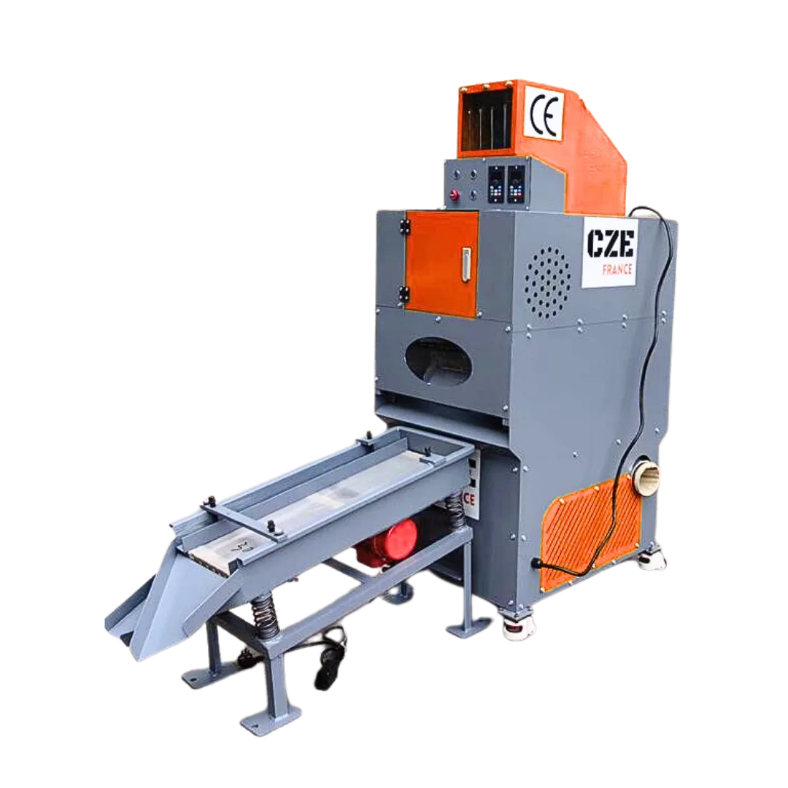
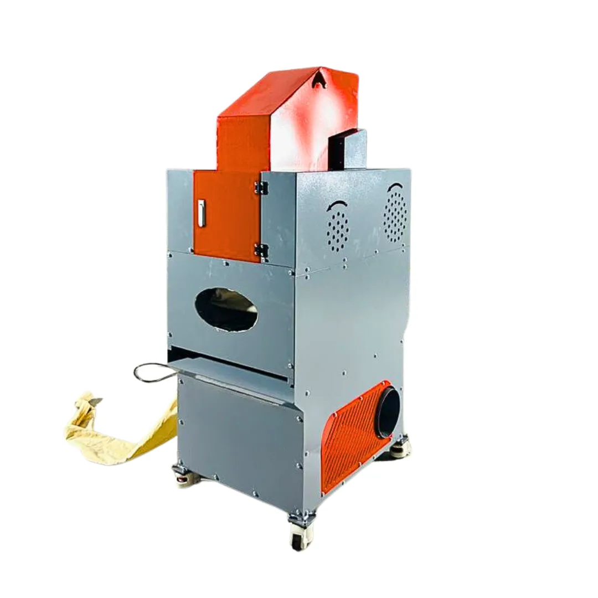
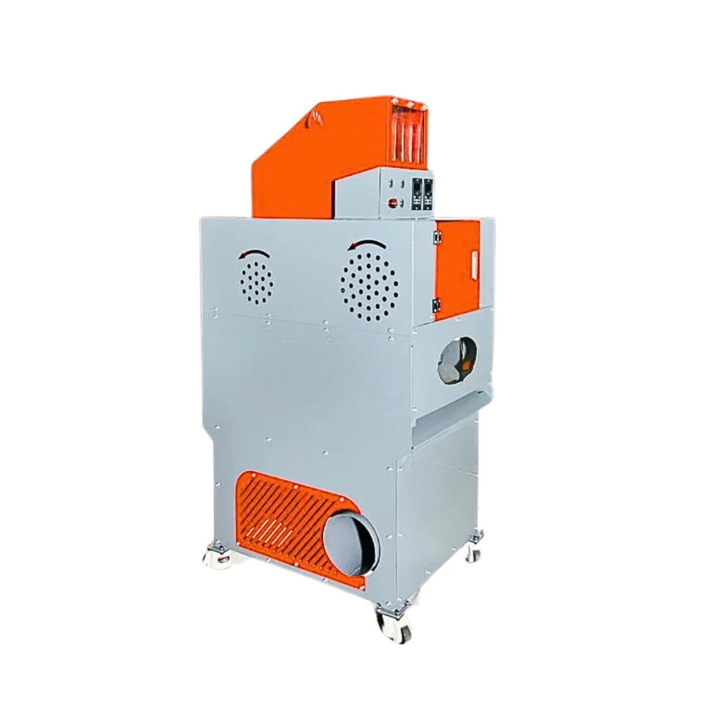
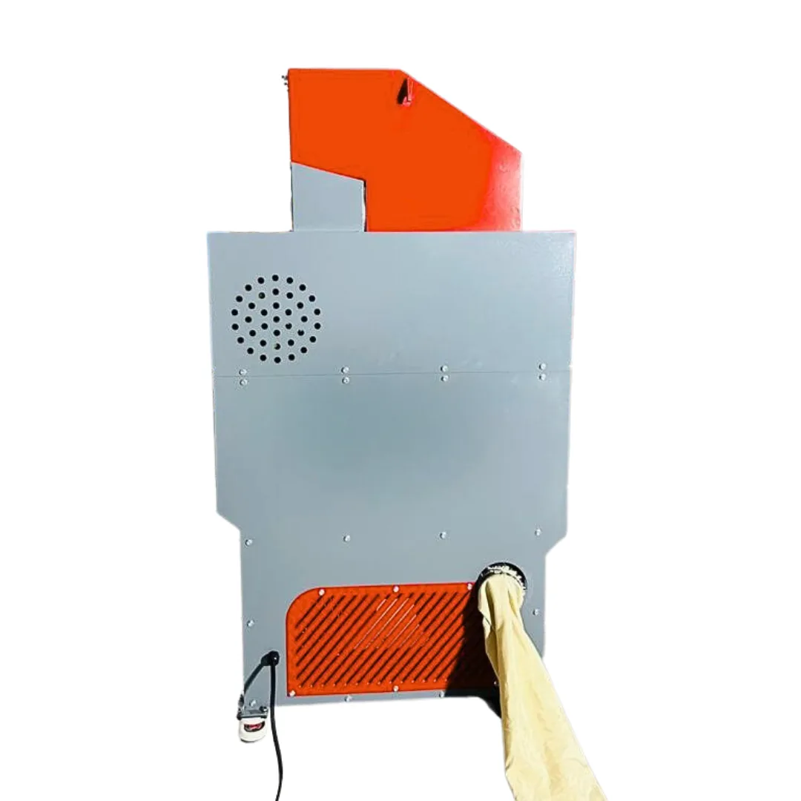
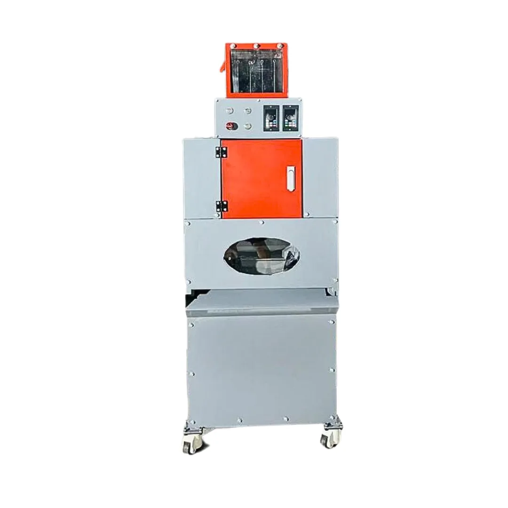

The V-C02 copper separator turns your cables into pure copper and plastic granules, with a 99.99% separation rate. A profitable investment for any ELV centre.

The V-C02 handles a wide variety of cables — automotive cables, communication cables and others — for stable performance and simple day-to-day use.
The V-C02 copper separator is designed to turn waste cables into copper and plastic granules, ready for recycling. The process is fully automated and relies on four main components:




At end-of-life vehicle (ELV) treatment centres, copper is one of the most valuable and sought-after materials on the global market. But its value depends directly on its purity. Un-stripped copper — still wrapped in its plastic insulation — typically sells for between €1 and €1.50 per kilo. Stripped copper, however, can reach up to €6.50/kg depending on its quality.
Take an ELV centre processing 10 vehicles a day, i.e. about 20 kg of copper daily. Sold un-stripped, that copper brings in around €30 a day. Stripped with the separator, it can be resold for up to €130 a day. Over a 250-working-day year, that is a difference of around €25,000 — simply by increasing the purity of the recovered copper.
Beyond the financial gain, the copper separator is part of a sustainable approach. By maximising the recovery and resale of pure copper, ELV centres reduce their waste, limit their carbon footprint and support a circular economy. In a competitive market, having a copper separator can be the deciding factor that puts your centre one step ahead, towards the future of automotive recycling.
The V-C02 separator reaches a copper separation rate of 99.99%, letting you resell very high-quality stripped copper at a value well above un-stripped copper.
It processes a wide range of cables from 0.1 to 30 mm: automotive cables, communication cables and other types of electrical cable.
The machine processes 20 to 40 kg of cable per hour, for an installed power of 4.2 kW.
By recovering stripped copper (up to €6.50/kg vs ~€1.50/kg un-stripped), a centre processing ~20 kg/day can generate several tens of thousands of euros in extra annual income, quickly paying back the machine.
The output separating sieve is offered as an option at €1,200 excl. VAT, in addition to the machine at €7,920 excl. VAT (€9,504 incl. VAT).
Configure your solution or tell us what you need: our team replies with a detailed quote tailored to your site.
Request a quote